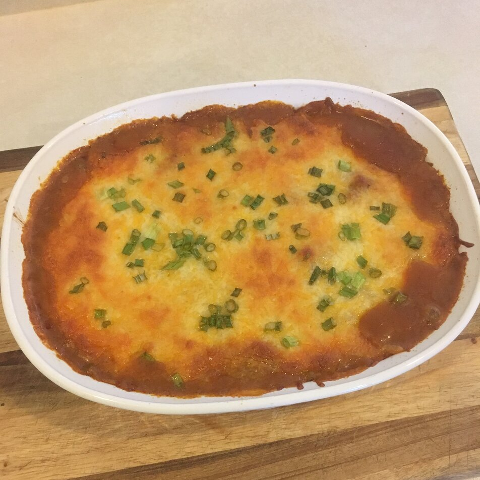

Mexican Beef Casserole
\

Description
This is a very easy and tasty casserole; great with a salad, chips, and salsa.
Ingrediants
- 1 lb lean ground beef
- 1 (15 oz.) can ranch-style beans
- 1 (14.5 oz.) can peeled and diced tomatoes
- 1 (10.75 oz.) can condensed cream of mushroom soup
- 1 (12 oz.) package of corn tortillas
- 4 cups shredded chedder cheese
- 2 tablespoons chili powder
Steps
- Preheat oven to 350 degrees F (175 degrees C).
- Brown the ground beef in a large skillet over medium high heat. Add chili powder, beans, tomatoes and soup; mix well and heat thoroughly.
- Line a 13x9 inch dish with tortillas. Then make a layer with the meat mixture. Make another row of tortillas, then finish off with rest of meat mixture. Top with grated cheese.
- Bake in a preheated oven for 30 minutes.
Return to main page